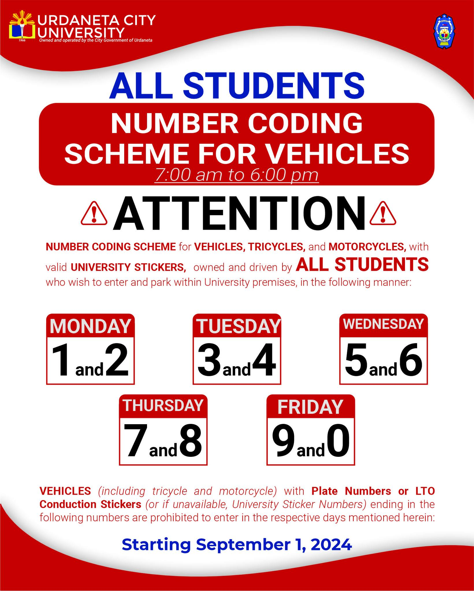

| Number Coding |
|---|
|
 Official administrative announcement of the Student Vehicle Number Coding Scheme
|
Urdaneta City University demonstrates a strong commitment to sustainability and emission reduction through the implementation of its Coding of Cars Program and the promotion of bicycle use within the campus. The university enforces a vehicle coding system, where access is regulated based on the last digit of vehicle license plates, similar to city-wide traffic coding schemes. This rotational system helps control the number of vehicles entering and parking on campus each day, effectively reducing traffic congestion and easing pressure on limited parking spaces.
| Student Number Coding Schedule (7:00 AM – 6:00 PM) | |
|---|---|
| Day of the Week | Prohibited Plate / Sticker Ending Digits |
| Monday | 1 and 2 |
| Tuesday | 3 and 4 |
| Wednesday | 5 and 6 |
| Thursday | 7 and 8 |
| Friday | 9 and 0 |
| Saturday & Sunday | No Restrictions Enforced |
The program aims to reduce traffic congestion, minimize the number of vehicles entering and parking on campus, decrease fuel consumption and carbon emissions, promote the use of eco-friendly transportation such as bicycles, e-bikes, and carpooling, encourage sustainable commuting habits among students and employees, optimize limited parking spaces, and support the development of a pedestrian-friendly and environmentally conscious campus. Through these objectives, the university strengthens its commitment to sustainable transportation and environmental responsibility.
To further support this initiative, UCU actively promotes cycling by investing in bicycle-friendly infrastructure, offering incentives for cyclists, and conducting educational programs that encourage eco-friendly commuting practices. These efforts aim to shift the campus community toward greener transportation alternatives while reinforcing awareness and long-term behavioral change.
The implementation of these initiatives has led to several positive outcomes, including reduced fuel consumption, lower carbon emissions, and improved traffic flow within the campus. Additionally, the coding system helps optimize the use of existing parking spaces by limiting the number of vehicles present at any given time.
With the program in place for the past three years, UCU has successfully fostered a more sustainable, pedestrian-friendly, and environmentally conscious campus environment. The strict enforcement of these policies, along with disciplinary measures for violations, reinforces the university’s dedication to maintaining an efficient and eco-friendly transportation system aligned with its sustainability goals.